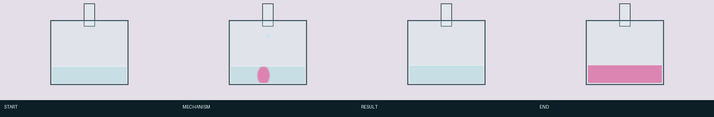
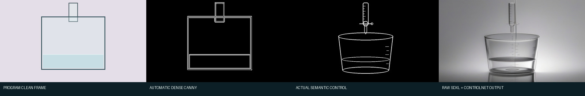
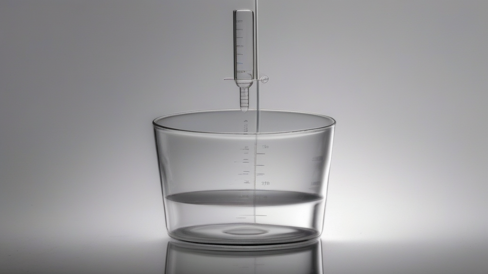
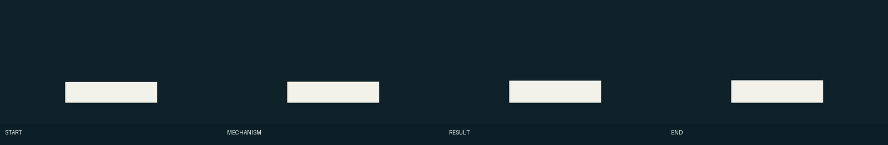
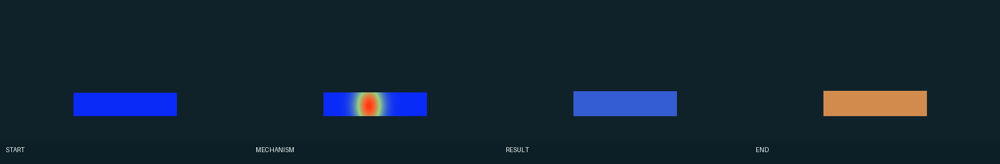
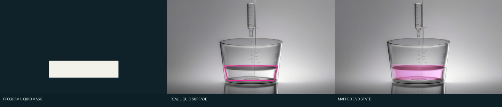
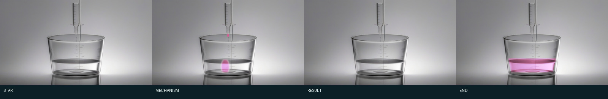

Live-Document / Video Model / Stage 3 / Design draft
把随机生图关进
一个确定的生产流程
Stage 2 已经证明“先生成一张可信外观，再把程序状态确定性地放回去”是可行方向。
Stage 3 不再为单个案例临时画控制图，而是要让同一份标准输入经过同一套编译、
搜索、验收和冻结规则，得到同一个被接受的结果，或得到一份明确的失败报告。
核心设想：
程序同时输出画面和事实数据；“控制图生成器”把事实数据变成模型能读的结构线，
“提示词生成器”把合同和用户视觉目标变成外观描述。SDXL 只按预先登记的有限参数组合
生成候选；检查器按合同淘汰错误图片并冻结一张外观底图。之后所有关键帧都由程序状态
和这张同一底图产生。
这里的“确定”不是承诺扩散模型没有随机性。
我们能保证的是：输入、代码、权重、运行时和版本配置相同，就执行相同路线、使用
相同 seed 集合、生成相同候选集合、运行相同验收并选中相同 ID。若没有候选通过，
流程必须停止并报告失败，不能把不合格图片包装成成功结果。
本页是待审核的 Stage 3 流程设计，尚未宣称已经实现。下面直接使用
我们 Stage 2 已经生成的烧杯产物解释，不要求新人先跳到另一份报告。
先用烧杯案例看懂整件事
程序要讲的是酸碱滴定：开始时液体无色；滴入碱液后，落点附近短暂变粉；
混合后粉色消退；到终点时整杯保持浅粉。下面四张是程序决定的四个事实状态，
不是模型自由想象的四幅画。

我们的实际程序图。START、MECHANISM、RESULT、END 分别表示开始、局部反应、
混合结果和滴定终点。Stage 3 必须保留这个因果顺序。
图片模型的任务不是重新发明滴定过程，而是先把“简陋烧杯图”变成一张可信的玻璃器材
外观。下图展示了 Stage 2 真正走过的四个文件。它也暴露了 Stage 3 要解决的问题：
第三张好用的器材线稿当时是固定模板，不是由第一张程序图自动编译出来的。

从左到右：①程序图；②自动 dense Canny，只会照着亮度变化描边；
③真正送入 ControlNet 的干净器材线稿；④SDXL + ControlNet 生成的玻璃烧杯。
Stage 3 的目标就是让 ①→③ 变成自动、通用、可追溯的 Control Compiler。
生图不会只吐出一张。Stage 2 用两个控制强度和三个 seed 得到下面六张；同一条线稿
仍会产生不同背景、反射和器材细节。Stage 3 不会假装这一步不随机，而是把“允许生成
哪六张、怎样验收、选哪一张”全部固定下来。
 我们实际生成的六张候选。第一行是 ControlNet scale 0.65，第二行是 0.80；
每行 seed 7101、7102、7103。最终冻结左上角的 0.65 / 7101。
我们实际生成的六张候选。第一行是 ControlNet scale 0.65，第二行是 0.80；
每行 seed 7101、7102、7103。最终冻结左上角的 0.65 / 7101。

这张就是 Appearance Anchor：六张候选中被选中并冻结的 0.65 / 7101。
它只提供玻璃、光照、相机和背景，后续不让模型重新画另外三只烧杯。
最后，程序用“哪里是液体”和“每个液体像素的 pH 是多少”修改同一张冻结烧杯，
而不是让 SDXL 独立重画四次。这样背景、相机和玻璃外形不会随帧漂移。

液体 mask：白色是允许改变颜色的液体，黑色禁止修改。mask 就是一张“修改许可图”。

pH scalar field：每个液体像素都有一个 pH 数值。蓝色偏酸、暖色偏碱；
第二帧中间的暖色斑块就是局部反应。

State Renderer B 的实际映射：左边程序 mask 是矩形；中间粉线标出真实烧杯里允许
修改的液面梯形；右边是把终点 pH 粉色投影进去后的结果。程序坐标不能直接贴到照片上，
必须先做这种 surface calibration（表面标定）。

我们已经得到的最终四帧：同一个烧杯、同一个相机和背景，只改变程序允许变化的液体
状态。这就是 Stage 3 想稳定复现并推广到新案例的目标结果。
可选附录：新概念普通话词典（主流程不依赖先读这张表）
| 术语 | 普通话解释 | 烧杯案例中的具体东西 |
|---|
| 标准输入包 |
一次任务的完整材料，而不只是一张截图；还要说明每帧发生什么、哪些区域能变。 |
上面的四张程序图、四帧 pH、液体区域、对象数量和固定相机要求。 |
| 输入合同 |
进入流程前双方同意且不能偷改的规则。缺少含义或坐标的输入直接报错。 |
必须只有一个烧杯和一根滴定管；状态必须按无色→局部粉→无色→整杯粉排列。 |
语义层
semantic layer |
把程序图拆成机器能理解、各负其责的数据层，而不是让模型从截图猜。 |
液体 mask 是一个层，pH 数值场是另一个层，烧杯边界又是另一个层。 |
| Semantic Normalizer |
把案例自己的名字归入通用类别，后面按数据类型处理，而不是按学科写特例。 |
chem01_liquid_region 归为 region；
chem01_ph_field 归为 scalar field。 |
| 受控随机 |
模型内部仍从噪声生成，但外部把模型、参数、seed 数量、验收和停止条件全部锁死。 |
烧杯不是“生成到满意为止”，而是只运行上面明确展示的六种组合。 |
| hard boundary |
不能随便改变的主要轮廓或拓扑，例如容器外形、河岸、物体边界。 |
烧杯外轮廓、滴定管位置和液面大致高度。 |
| region / mask |
一张黑白许可图：白色区域允许某种修改，黑色区域不允许。 |
上面四张白色长方形只允许 B 修改杯中液体，不准染到桌面和玻璃外。 |
| scalar field |
不是一整块只有一个数，而是每个像素都保存一个连续数值。 |
pH 场让第二帧只有落点附近偏碱，而不是整杯突然一起变粉。 |
| height / normal |
height 记录每个位置有多高；normal 记录表面朝向，用来算地形或水面的明暗。 |
烧杯案例暂时不需要；以后画山地或水波时用，不能粗暴地全转成 Canny 线。 |
| object identity |
为每个物体保留身份证：数量、位置和跨帧对应关系。 |
四帧中同一根滴定管和同一个烧杯不能凭空增加、消失或换位置。 |
| Control Compiler |
把上述语义层自动翻译成模型能使用的线稿、mask、深度、法线和锚点。 |
目标是自动得到四栏对比中的第三张干净器材线稿；当前 Stage 2 还靠固定模板。 |
| dense Canny |
对截图中每个明显亮度变化都描线；实现容易，但不懂哪些线有教学意义。 |
四栏对比的第二张连程序矩形感一起保留，因此只作为负对照。 |
| sparse semantic control |
只保留模型必须服从的少量结构线，让 SDXL 有空间生成自然材质。 |
四栏对比的第三张只画器材结构，不画颜色、pH、文字和背景纹理。 |
| Prompt Compiler |
按固定槽位拼提示词，不让 Agent 每次临场发挥。 |
固定写“一只透明玻璃烧杯、一根滴定管、正视相机、实验室光照”，并禁止多余器材、
文字和塑料感；逐帧粉色状态不写进 Anchor prompt。 |
| seed |
随机噪声的起点编号。它不是质量分数；换编号就可能换背景、反射和细节。 |
六张候选中的 7101、7102、7103。 |
| ControlNet scale |
结构线对 SDXL 的牵引强度，不是图片缩放百分比。越高通常越贴线，也可能更僵硬。 |
六张候选比较了 0.65 和 0.80，最终选中 0.65 / 7101。 |
| 固定候选矩阵 |
在运行前就写死要试的有限组合，禁止看到结果后无限加 seed 抽卡。 |
本例是 2 个 scale × 3 个 seed = 6 张 raw candidates。 |
| 硬门禁 |
不满足事实就直接淘汰，不能用“更好看”抵消。 |
多画烧杯、滴定管缺失、器材被裁掉、出现文字，都直接拒绝。 |
| 视觉评分 |
只在硬门禁通过后比较玻璃是否自然、塑料感、光照、伪影和可读性。 |
六张都要先过器材检查，再比较哪张最像真实玻璃且背景适合做动画。 |
| tie-break |
两张得分相同时的固定裁决顺序，避免重跑时随意换图。 |
例如先按配置 ID，再按 seed 从小到大选择；规则必须提前写进版本配置。 |
| Appearance Anchor |
被选中并冻结的一张外观底图，只负责材料、光照、相机和稳定构图。 |
六张候选左上角的 0.65 / 7101；后面四帧都使用这同一张烧杯。 |
| State Renderer B |
不用生图模型，按程序数据把不同状态确定性地投影到同一 Anchor。 |
读取液体 mask 和 pH 场，生成最后那组无色→局部粉→无色→整杯粉。 |
surface calibration
表面标定 |
告诉 B“程序里的区域”在真实底图中对应哪里，避免把矩形数据直接贴到透视物体外面。 |
上面的三栏图把程序矩形液体映射到真实烧杯的粉色梯形液面。 |
| fallback ladder |
预先写好的有限补救顺序；当前档失败才能进下一档，用完就停止。 |
例如先试标准稀疏线，再试稍强结构线；不能失败后临时手画一张新线稿。 |
| 输入签名 / SHA-256 |
文件和配置的数字指纹，用来确认重跑读取的确实是同一批东西。 |
冻结 0.65 / 7101 后记录图片哈希；B 必须读取这张图，不能悄悄换候选。 |
主流程图
第 0 步可以这样理解：
把程序关键帧、重要过程定义、不可改变的对象，以及液体 mask、pH 如何变化等数据
一起冻结成一个“输入包”。其中 input_contract.json 写含义、规则、
文件路径和验收条件；逐像素 mask、pH 数组等较大数据保存在它引用的 PNG/NPY 文件里。
后续检查会读取这份 JSON 及其引用的数据，而不是直接把生成图片和一段 JSON 文字相减。
| 合同中的内容 | 以后在哪里使用 |
|---|
| 文件是否齐全、尺寸和坐标是否一致 | G0：输入完整性检查 |
| 烧杯/滴定管数量、边界和位置 | G1 检查控制图；G2 检查模型候选 |
| 液体允许变化区域 | 步骤 6 限制修改范围；G3 检查杯外是否被改动 |
| pH 数值及无色→局部粉→无色→整杯粉顺序 | 步骤 6 生成状态；G3 检查整组关键帧 |
烧杯输入合同大约长什么样
下面是 Stage 3 拟定的数据结构示意。JSON 保存规则和文件索引；每个像素的 pH
不直接铺在 JSON 里，而是放在它指向的 NPY 文件中。
{
"case_id": "CHEM-01",
"required_objects": [
{"id": "beaker", "count": 1},
{"id": "burette", "count": 1}
],
"camera": {"view": "front", "locked": true},
"keyframes": [
{"id": "00_start", "expected_state": "colorless"},
{"id": "01_mechanism", "expected_state": "local_pink"},
{"id": "02_result", "expected_state": "colorless"},
{"id": "03_end", "expected_state": "uniform_pale_pink"}
],
"layers": [
{
"id": "liquid_region",
"type": "region",
"path_pattern": "layers/{keyframe}/liquid_mask.npy",
"meaning_zh": "只有该区域允许出现液体状态变化"
},
{
"id": "ph_field",
"type": "scalar_field",
"path_pattern": "layers/{keyframe}/ph_field.npy",
"range": [0, 14],
"meaning_zh": "每个液体像素的 pH"
}
],
"visual_goal": {
"material": "realistic clear glass",
"lighting": "neutral laboratory"
},
"sequence_rules": [
"background_must_stay_fixed",
"pink_pixels_must_stay_inside_liquid_region"
]
}
确定性程序步骤
固定边界内的生成模型
检查/确定性决策
冻结产物
失败即停止，不伪造成功
源
程序同时输出“给人看的图”和“给机器看的数据”
程序本来就先计算内部状态，再把状态画成关键帧。Stage 3 要求程序在画图的同时，
把关键数据另存出来；这些数据就是语义层的来源，不是后面从截图里猜出来的。
- 谁提供
- 概念规划器定义要讲什么；程序代码计算每个关键时刻的状态。
- 程序输入
- 概念参数和时间点，例如滴定液加入量、初始 pH、终点阈值。
- 程序输出
- 关键帧 PNG；液体 mask；逐像素 pH 数组；烧杯、滴定管等对象记录。
- 烧杯例子
- 同一个 pH 数组既决定程序图哪里变粉，也原样导出为
ph_field.npy，因此图片和数据来自同一个计算结果。
0
原名：冻结标准输入
把任务、关键帧、数据层和验收标准固定下来
把上游程序产物整理成一个有版本、可检查、后续不能偷改的输入包。
- 输入
- 概念说明、关键帧 PNG、程序状态、语义层文件和用户认可的外观目标。
- 处理
- 写明每个文件是什么、坐标系、取值范围、允许变化和必须保持的内容；
为全部文件和配置计算数字指纹。
- 输出
input_contract.json + 它引用的
program_frames/、layers/ 和 states/。- 烧杯例子
- 合同写明一个烧杯、一根滴定管、固定正视相机、四个状态；
液体 mask 和 pH 文件路径及含义也写在合同中。
G0
不要叫“门禁”：它就是一次输入检查
检查输入是否完整、互相一致
- 读取
input_contract.json 以及它列出的全部 PNG/NPY/JSON。- 检查
- 文件存在、尺寸和坐标一致、状态顺序完整、每个数据层有名字和含义、
pH 数值在声明范围内。
- 不检查
- 这里还没有生成图片，因此不判断玻璃是否真实，也不选择候选。
- 失败例子
- 只有一张粉色截图，却没说明粉色代表 pH、哪块是液体或它属于
第几个状态，流程就在这里停止。
1
代码模块名可叫 Semantic Normalizer
统一语义层接口，让后续程序知道每层数据该怎么用
“语义层”已经由上游程序导出；这一步不创造 pH 或 mask，只把不同案例自己的名称
映射为几种通用处理类型。这样控制图生成器不需要认识“化学滴定”这个案例名。
hard boundary物体轮廓与拓扑
region / scalar区域、浓度、温度、厚度
height / normal地形和水面起伏
object identity数量、锚点和跨帧身份
- 输入
- 合同中登记的原始语义层，例如
chem01_liquid_region 和 chem01_ph_field。
- 处理
- 按合同声明，把层归类为 boundary、region、scalar field、
height/normal 或 object identity；不修改原始数值。
- 输出
normalized_layers.json：每个通用类型指向哪个原始文件、
后面允许用于哪种处理。- 烧杯例子
- 液体许可图归为 region，pH 归为 scalar field，
杯壁/滴定管归为 hard boundary，器材数量归为 object identity。
2
代码模块名可叫 Control Compiler
根据语义层生成图片模型真正要看的控制数据
- 输入
normalized_layers.json 及其指向的边界、region、
scalar field、height/normal 和对象数据。- 处理
- boundary 生成稀疏黑白结构线；region 保持为独立 mask；
height/normal 保持为几何数据；scalar field 留给步骤 6，不画成密集线。
- 输出
structure_control.png、
regions/*.png、geometry/*、
anchors.json 和每个输出的推导记录。- 烧杯例子
- 结构图只保留杯口、杯壁、滴定管和液面；pH 粉色、文字和背景
不进入结构控制。
Canny 在这里是什么关系？
Canny 只是生成黑白结构线的一种工具，不是本流程必经的独立阶段。
如果程序已经输出矢量/干净边界，就直接渲染成线稿，不需要 Canny；
如果只有一张干净的 boundary 图层，可以只对该图层跑 Canny。
默认禁止对整张彩色程序截图跑 dense Canny，因为它会把文字、颜色分界和程序方框
一起描出来。无论线稿由直接渲染还是 Canny 得到，最后的
structure_control.png 才是送给 Canny ControlNet 的图片。
G1
原名“控制图门禁”
检查控制图是否正确
- 比较双方
- 步骤 2 生成的结构图，与合同引用的 boundary、对象数量、
锚点和禁止内容数据。
- 检查方法
- 比较轮廓覆盖率、连通关系、对象数量、锚点偏差和边缘密度；
检查是否混入 annotation、UI 或文字区域。
- 不是
- 不是把 PNG 和 JSON 字符串直接比较。JSON 告诉检查器应读取哪个
边界数组、期望几个对象和阈值是多少。
- 烧杯例子
- 控制图必须保留一只杯和一根管；缺杯口、管子错位、出现标题
或碎线过密，都不能进入生图。
3
代码模块名可叫 Prompt Compiler
根据合同和视觉目标生成外观提示词
提示词有明确来源，不是 Agent 运行到这里临场写一句英文。
- 来源一
- 输入合同：场景是什么、对象数量、固定镜头、必须保留和禁止出现什么。
- 来源二
- 用户认可的视觉目标：例如“材料真实、像纪录片画面、不要塑料感”。
- 来源三
- Stage 3 版本化模板和材质词典：把上述字段按固定顺序组装。
- 输出
positive_prompt.txt、
negative_prompt.txt 和 prompt_manifest.json；
manifest 写清每一段词来自哪个合同字段，并检查 token 是否截断。- 烧杯例子
- 正向词来自“一只烧杯、一根滴定管、透明玻璃、正视相机、中性实验室
光照”；负向词来自“禁止多余器材、文字和塑料感”。逐帧粉色变化不写入外观底图提示词。
4
原名“固定候选矩阵”
按预先写好的有限参数组合生成候选图
- 输入
- 通过检查的结构控制图、正/负提示词、固定 SDXL/ControlNet 权重
和版本化生成配置。
- 处理
- 只运行配置中预先登记的 seed、ControlNet 强度、尺寸、步数和
scheduler 组合，不根据结果临时追加抽卡。
- 输出
- 未经后期修改的模型候选图，以及每张图对应的模型、参数、seed、
输入签名和文件哈希。
- 烧杯例子
- 上面展示的 2 个控制强度 × 3 个 seed = 6 张候选；
看完结果后不能临时追加 seed 7104。
G2
原名“事实硬门禁 + 视觉评分”
检查候选图是否符合合同，再按固定规则排序
- 输入
- 六张模型候选、输入合同、对象/边界数据，以及版本化视觉评分表。
- 事实检查
- 读取合同中的对象数量、位置、镜头、禁止文字和裁切范围；
多画、漏画或结构错误的候选直接拒绝。
- 视觉比较
- 只比较事实检查通过的图片：材料自然度、塑料感、光照、
控制线残留和动画使用价值。
- 输出
- 每张候选的通过/拒绝状态、逐项分数和原因。分数相同则按预先固定的
配置 ID、seed 顺序裁决。
- 烧杯例子
- 器材多画或缺失先淘汰；剩下的再比玻璃和反射，最终固定选中
0.65 / 7101，而不是每次重新表达个人喜好。
至少一张通过
按固定排序选中唯一一张外观底图
按固定分数、配置 ID、seed 顺序选出唯一候选；记录路径、SHA-256、模型和全部
参数。以后重跑直接复用该冻结文件，不重新审美抽选。
“外观底图”也叫 Appearance Anchor：
它只固定材质、光照、相机和背景。烧杯例子中就是左上角 0.65 / 7101；
四张关键帧都必须读它。
全部失败
执行预先规定、次数有限的补救步骤
这就是原先写的 fallback ladder。它只允许进入版本中预先声明的下一档控制密度
或控制强度。所有档位用尽后输出失败报告并停止；禁止临时手改线稿、改提示词或
继续换 seed。这个分支不会进入下方的冻结步骤。
烧杯例子：如果六张都多画器材，就按配置进入
下一档控制；下一档也失败就报告“无合格 Anchor”，不能挑一张错误图凑数。
↓ 只有左侧“至少一张通过”分支可以继续 ↓
5
Appearance Anchor = 冻结外观底图
冻结选中的外观底图，后续不再换图
- 输入
- 步骤 G2 的唯一选中候选及其完整生成记录。
- 处理
- 复制为生产底图，记录 SHA-256、选择原因和所有上游文件签名。
- 输出
appearance_anchor.png 和
selection.json。- 烧杯例子
- 冻结图提供玻璃、反射、背景和相机；无色或粉色仍由程序 pH
决定，不由这张底图决定。
6
代码模块名可叫 State Renderer B
用程序状态和同一张外观底图生成全部关键帧
- 输入
- 冻结外观底图；每帧 region、scalar field、height/normal、
object identity；合同中的坐标和允许变化规则。
- 处理
- 先把程序坐标映射到真实底图，再执行区域着色、数值场材质变化、
对象合成或法线光学。这里不调用图片生成模型。
- 输出
- 所有写实关键帧、每帧修改区域以及状态到像素的推导记录。
- 烧杯例子
- 把程序矩形液体标定到真实杯内梯形；mask 限制位置，pH 转成
酚酞粉色强度，得到无色→局部粉→无色→整杯粉四帧。
G3
原名“序列门禁”
把整组关键帧与输入合同逐项核对
- 输入
- 步骤 6 的全部关键帧、输入合同和它引用的每帧状态/语义层。
- 检查
- 对象身份、因果顺序、允许变化区域、静态背景、首尾状态和案例声明的
守恒/单调性。
- 输出
- 通过的关键帧组，或精确到帧、区域和合同条目的失败报告。
- 烧杯例子
- 杯外背景必须不动；粉色必须按无色→局部粉→无色→整杯粉，
且颜色不能跑到 mask 外。
7
用通过检查的相邻关键帧生成视频过渡
- 输入
- 通过 G3 的相邻两张关键帧、这段过程允许发生的运动和禁止变化。
- 处理
- 使用固定视频模型、提示词、seed 和有限候选数生成过渡。
- 检查
- 首尾对应、是否换场、对象是否丢失、运动方向和过程约束。
- 失败处理
- 模型候选全部失败则回退到确定性程序动画，不牺牲教学事实。
- 烧杯例子
- 模型只能补全液滴落下和颜色扩散，不能把一只杯变成两只，
也不能在结束时丢掉滴定管。
8
交付图片、视频和一份能从头追到尾的报告
- 收集
- 输入包、标准化语义层、控制图、提示词、模型参数、未修改候选、
拒绝原因、冻结底图、状态投影和最终视频。
- 输出
- 最终交付文件、manifest、文件哈希和新人可读 HTML；报告链接也自动检查。
- 烧杯例子
- 读者在一页内看到本页开头的程序图、控制对比、六张候选、
mask、pH、映射和最终四帧，并能回答每张图从哪里来、下一步去了哪里。
Stage 3 必须消除的三种临时性
| Stage 2 暂时做法 |
Stage 3 确定做法 |
验收证据 |
| 烧杯控制图由固定坐标模板单独绘制 |
控制图必须由标准语义层通过 Control Compiler 自动派生 |
每条线/区域都有来源 layer、算法、参数和哈希；可反查到程序状态 |
| Agent 看候选后临时决定继续怎么试 |
候选矩阵、fallback ladder、最大预算和停止条件预先版本化 |
同一输入签名得到同一 job list，不能运行未登记的第 N+1 次抽卡 |
| “好不好看”主要依赖临场判断 |
固定硬门禁、冻结视觉标尺、版本化评分器和唯一 tie-break |
每个候选都有逐项分数与拒绝原因；生产选择无需重新人工挑选 |
Control Compiler 是 Stage 3 的第一核心
Stage 2 的烧杯结果证明：语义干净、信息充分的稀疏线稿比 dense Canny 更有潜力；
但它还没有证明线稿能够从程序自动得到。因此 Stage 3 的第一个真正实验不应该继续
调 prompt，而应比较同一批程序输入的三种控制：
- 负对照：直接从程序截图得到的 dense Canny。
- 当前上限：Phase 9 中的人工固定器材模板。
- 目标路线：由统一语义层自动编译的 sparse semantic control。
目标路线只有在化学案例接近或达到人工模板，同时在至少两个其他学科案例不退化，
才能成为通用核心。否则它仍只是一个案例技巧。
Control Compiler 的通用规则草案
hard_boundary：保留外轮廓、拓扑节点和必要内轮廓；按画布比例控制线宽。region：输出独立 mask，不把整片区域纹理转成密集边缘。scalar_field：保留原始浮点数据供 B 使用；默认不送 Canny。height_or_normal：输出深度/法线；只把大尺度遮挡边界送结构控制。object_identity：输出中心、包围盒、数量和跨帧 ID，供硬门禁检查。annotation：从模型控制中排除，写实化完成后再由程序叠加。- 任何案例插件只允许提供语义数据，不能偷偷提供一张无法追溯的最终控制图。
“保证得到想要的结果”的准确边界
Stage 3 可以保证：
同一输入签名
→ 同一语义归一化
→ 同一控制图
→ 同一提示词
→ 同一有限候选集合
→ 同一门禁和排序
→ 同一选中 ID / 同一失败结论
→ 同一确定性 B 关键帧
Stage 3 不能诚实保证：
任意新概念第一次输入
→ SDXL 必定生成一张视觉上完美的图片
因此生产合同应写成：系统只交付通过视觉与机制验收的结果；如果固定搜索空间
内没有合格结果，则交付可诊断失败，而不是交付错误图片。这比“每次一定吐出
一张图”更接近真正可靠的确定流程。
审核通过后的实现顺序
S3.0 冻结合同与基线
冻结 Phase 9 烧杯目标、跨学科回归输入、目录 schema、质量门禁和失败定义。
S3.1 Control Compiler
先不改模型和提示词，只验证程序语义能否自动生成达到人工模板上限的控制。
S3.2 固定搜索与选择
版本化候选矩阵、fallback ladder、质量评分和唯一 tie-break，消除临场抽卡。
S3.3 Prompt Compiler
把提示词拆成稳定槽位并做 token/禁区检查，不再由案例脚本拼自由字符串。
S3.4 通用 State Renderer B
统一区域、标量、对象和法线四类算子，验证一张 Anchor 能稳定产生多关键帧。
S3.5 跨学科发布门
至少覆盖数学、物理、化学、生物、地理代表案例，并回归三角洲和 Phase 9 烧杯。
文档状态：Stage 3 流程设计草案。创建本页不运行图片或视频模型，也不修改 Stage 2
的任何冻结结果。